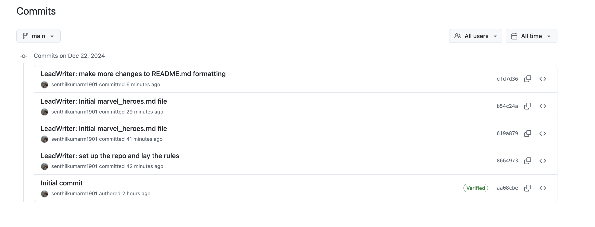

Introduction
In this blog we have covered several advanced features of git, all the while unfurling the Marvel universe story
git commit --amend # (Scenario A and B)
git pull --ff # (Scenario A)
git push remote branch --force-with-lease # (Scenario B)
git diff # (Scenario C)
git rebase -i commit-hash # (squash and reword disussed in Scenario D)
git reset --hard commit-hash # (Scenario E)
git rebase # (Scenario F)
git revert # (Scenario G)
git switch feature && git rebase main
git merge --no-ff
git tag ( git tag marvel-phase-end) # (Scenario H)
# Bonus: How are Pull Requests in public repoSetting the Context to the Marvel Story
fun-marvel-git-tutorial: > This is a Marvel-inspired fun Git Tutorial to help a coder transition from a beginner to an advanced Git User
If you would like to review the history discussed in this blog, refer to the below repo: Repo: https://github.com/senthilkumarm1901/fun-marvel-git-tutorial
Instead of a regular tutorial that explains the
git commandsone by one, this blog takes up anappliedapproach by weaving the knowledge of git commands in the most practical manner possible - as part of a story of collaboration in Git. I have attempted to keep this as close to real life experience as possible,
Story - A Team of Script Writers at Marvel Enterprises:
A Team of 4 Writers are collaborating in Git to create amazing comic stories in the Marvel Universe
About the Team - A Lead Script Writer at Marvel is tasked with creation of several comics. - He delegates the work to 3 writers with the following responsibilities
Responsibilities
[!IMPORTANT] - Where do all Writers Collaborate - In
GitHub
- Each Writer can create a branch for them to commit their efforts
- Upon completion of the work, they are expected to seekPull RequestReview for merging their branch withmainwhere the Lead Script Writer comments and approves.
Lead Script Writer’s Initial Efforts
- Create a repo in remote.
git clonelocally - Push all initial ground work such as
- the context portions in
README.mdand - the initial empty version of
marvel_heroes.md
- the context portions in
- The writers are expected to contribute their efforts in their branches in the file
marvel_heroes.md
[!NOTE] - The only file all writers are collaborating in is
marvel_heroes.md
The Lead Script Writer’s Git Journey
The Boilerplate Git Commands
# Ensuring my Personal GitHub Creds are utilized
% git clone git@github.com-personal:senthilkumarm1901/fun-marvel-git-tutorial.git
% cd fun-marvel-git-tutorial.git
% git config user.email "senthilkumar.m1901@gmail.com"
% git config user.name "senthilkumarm1901"
#---
# Ensuring this git_commands file and folder are ignored by git
## will ignore all `git_commands.md` file anywhere in the git repo
% echo "git_commands.md" >> .gitignore
## Ignoring `git_commands/` folder anywhere in the git repo
% echo "**git_commands/" >> .gitignore
#---
# Now, the LeadWriter made a minor edit
# adding `README.md` and `marvel_heroes.md` files to git
% git add README.md && git commit -m "LeadWriter: set up the repo and lay the rules"
% git add marvel_heroes.md && git commit -m "LeadWriter: Initial marvel_heroes.md file"
% cat marvel_heroes.md
> In this document, all writers contribute their efforts
% git push origin main
#---Scenario A: git commit --amend && git pull --ff && git push remote branch
# LeadWriter made some minor edits to `README.md`
% vi README.md
## added the changes to previous commit
% git add README.md
% git commit --amend --no-edit
## It seems after pushing amending commit results in conflicts
% git push origin main
To github.com-personal:senthilkumarm1901/fun-marvel-git-tutorial.git
! [rejected] main -> main (non-fast-forward)
error: failed to push some refs to 'github.com-personal:senthilkumarm1901/fun-marvel-git-tutorial.git'
hint: Updates were rejected because the tip of your current branch is behind
hint: its remote counterpart. Integrate the remote changes (e.g.
hint: 'git pull ...') before pushing again.
hint: See the 'Note about fast-forwards' in 'git push --help' for details.
## Adhereing to the suggestion above
% git pull --ff
Merge made by the 'ort' strategy.
% git push origin main
Enumerating objects: 8, done.
Counting objects: 100% (7/7), done.
Delta compression using up to 8 threads
Compressing objects: 100% (4/4), done.
Writing objects: 100% (4/4), 532 bytes | 532.00 KiB/s, done.
Total 4 (delta 2), reused 0 (delta 0), pack-reused 0
remote: Resolving deltas: 100% (2/2), completed with 1 local object.
To github.com-personal:senthilkumarm1901/fun-marvel-git-tutorial.git
619a879..1aac0d4 main -> mainWhat just happened?
- After first
git pushbut beforegit commit --ammend --no-edit - Both
mainandorigin/mainare in the same commitC
A---B---C (main & origin/main)- After
git commit --amend, the local and remote main branches have diverged
A---B---C (origin/main)
\
C' (main)- After
git pull, a 3-way merge happened
A---B---C--- M (main, origin/main)
\ /
C'What is ORT Strategy
- The ‘ort’ strategy refers to the “Optimized Recursive Three-Way Merge” strategy
- A merge commit was created, combining the remote branch and your amended commit.
Before ORT merge 
After ORT merge 
[!NOTE]
git pull --ffallows Git to fast-forward if possible, but if the branches have diverged (as in your case), Git falls back to performing a merge.
- If I wish to avoid a
merge-commitin the history, I could have done,git push --force(see another example below)
Scenario B: git push --force-with-lease

Goal: How about keeping the commit history clean? No,
merge commitlike above in the 3-way merge.
What if I used git push --force-with-lease
% git add README.md
% git commit --amend
# EDITED MESSAGE: `LeadWriter: make more changes to README.md formatting`
% git log --oneline --all
efd7d36 (HEAD -> main) LeadWriter: make more changes to README.md formatting
1aac0d4 (origin/main, origin/HEAD) Merge branch 'main' of github.com-personal:senthilkumarm1901/fun-marvel-git-tutorial
b54c24a LeadWriter: Initial marvel_heroes.md file
619a879 LeadWriter: Initial marvel_heroes.md file
8664973 LeadWriter: set up the repo and lay the rules
aa08cbe Initial commit
% git push origin main --force-with-lease
Enumerating objects: 7, done.
Counting objects: 100% (7/7), done.
Delta compression using up to 8 threads
Compressing objects: 100% (3/3), done.
Writing objects: 100% (3/3), 405 bytes | 405.00 KiB/s, done.
Total 3 (delta 1), reused 0 (delta 0), pack-reused 0
remote: Resolving deltas: 100% (1/1), completed with 1 local object.
To github.com-personal:senthilkumarm1901/fun-marvel-git-tutorial.git
+ 1aac0d4...efd7d36 main -> main (forced update)After git push --force-with-lease update
Unfamiliar with above gitk view, here is the terminal view of the same:
% git log --oneline --all --decorate --graph
* efd7d36 (HEAD -> main, origin/main, origin/HEAD) LeadWriter: make more changes to README.md formatting
|\
| * 619a879 LeadWriter: Initial marvel_heroes.md file
* | b54c24a LeadWriter: Initial marvel_heroes.md file
|/
* 8664973 LeadWriter: set up the repo and lay the rules
* aa08cbe Initial commitWhat just happened?
- Before
git commit --amend
A---B---C---M (origin/main, main)- After
git commit --amend
A---B---C---M (origin/main)
\
M' (main)- After
git push origin main --force-with-lease
A---B---C---M' (origin/main, main)
A Quick Recap of Force Push 
Scenario Recap:
- I pushed a commit to the remote repository.
- I made additional changes to the same commit (e.g., using
git commit --amend). - I am now trying to sync my updated local branch with the remote branch.
Pros and Cons of Using git push --force in This Case
| Aspect | Using git pull --ff (git pull==git fetch && git merge) |
Using git push --force |
|---|---|---|
| Safety | Ensures you’re up-to-date with remote history. | Can overwrite remote history if not careful. |
| Ease of Use | Requires resolving conflicts if history diverges. | Directly applies your local changes to remote. |
| Collaboration | Safe for shared branches. | Risky in shared branches (disrupts others). |
| Commit History | Preserves history integrity. | Rewrites history (can confuse others). |
Safer Alternative:
git push --force-with-lease (compared to git push --force) If I must force push, I could try --force-with-lease:
git push origin <branch-name> --force-with-leaseThis ensures the remote branch hasn’t been updated by someone else since my last fetch. If there’s a mismatch, Git will reject the push, preventing accidental overwrites.
git push –force vs –force-with-lease discussion in slackoverflow
Cleaner Commit history in Remote Repo because of git push --force-with-lease

- In general, it is better to use
git commit --amend(or evengit rebase -i commit-hash- discussed in next section) BEFORE you have pushed your changes to remote branch. - But if you have pushed your changes to remote, you must be prepared to use
git push --force-with-leaseorgit push --force-if-includes
Writer1’s Git Journey
The Boilerplate Git Commands
# Writer1 clone the repo
# ensure he uses the right user.email and user.name
% git clone github.com-personal:senthilkumarm1901/fun-marvel-git-tutorial.git
% cd fun-marvel-git-tutorial
% git config user.email "senthilkumar.m1901@gmail.com" && git config user.name "senthilkumarm1901"
% git status
On branch main
Your branch is up to date with 'origin/main'.
nothing to commit, working tree clean
# Switch to a new branch `writer1/avengers`
% git switch -c writer1/avengers- Writer 1 making the first commit
Writer1: about main 3 avengers
% vi marvel_heroes.md
% git add marvel_heroes.md && git commit -m "Writer1: about main 3 avengers"
% cat marvel_heroes.md
> In this document, all writers contribute their efforts
## About the Main Avengers
- **Iron Man:** Created the Iron Man suit and saved himself from captivity.
- **Captain America:** Led the charge against Hydra during WWII and became a symbol of hope.
- **Thor:** Defended Asgard and Earth, wielding Mjolnir with unshakable valor.Scenario C - Understanding git diff --staged usage
- Writer1 making second commit -
Writer1: about other 3 avengers
% vi marvel_heroes.md
% git add marvel_heroes.md
% git diff --staged
diff --git a/marvel_heroes.md b/marvel_heroes.md
index daf9bed..bacf14a 100644
--- a/marvel_heroes.md
+++ b/marvel_heroes.md
@@ -5,3 +5,7 @@
- **Captain America:** Led the charge against Hydra during WWII and became a symbol of hope.
- **Thor:** Defended Asgard and Earth, wielding Mjolnir with unshakable valor.
+## Other Main Avengers
+- **Hulk:** Balanced a life of science with his uncontrollable strength to smash enemies.
+- **Hawkeye:** The marksman with unerring aim, standing tall against gods and monsters armed with nothing but a bow and arrow.
+- **Black Widow:** The spy turned Avenger, weaving through shadows with unmatched skill and unwavering loyalty.
\ No newline at end of file
%Interpretting git diff --staged command
The green lines are the newly created lines in
marvel_heroes.md
% git commit -m "Writer1: about other 3 avengers"- Writer 1 making 3rd and 4th commits
Writer2: add deadpool to avengersandWriter2: deadpool fighting villains
% git add marevel_heroes.md && git diff --staged
If you see above, a
new lineis added after Black Widow line and a new section onDeadPoolwas added
% git commit -m "Writer2: add deadpool to avengers"
% vi marvel_heroes.md
% git add marvel_heroes.md && git commit -m "Writer2: deadpool fighting villains"
# review the logs
% git log --oneline --all
35f4935 (HEAD -> writer1/avengers) Writer2: deadpool fighting villains
32ed5cc Writer2: add deadpool to avengers
bd1338c Writer1: about other 3 avengers
d712258 Writer1: about main 3 avengers
efd7d36 (origin/main, origin/HEAD, main) LeadWriter: make more changes to README.md formatting
b54c24a LeadWriter: Initial marvel_heroes.md file
619a879 LeadWriter: Initial marvel_heroes.md file
8664973 LeadWriter: set up the repo and lay the rules
aa08cbe Initial commitScenario D - Altering history and commit messages using interactive git rebase
# Since the commit is not pushed to remote yet,
# the commit messages can be edited,
# even the commits can be squished
% git rebase -i HEAD~2
I am rewording the incorrect commit message from
Writer2toWriter1I am squashing the newer commit to the previous commit

% git log --oneline --all
f7bd564 (HEAD -> writer1/avengers) Writer1: add deadpool to avengers
bd1338c Writer1: about other 3 avengers
d712258 Writer1: about main 3 avengers
efd7d36 (origin/main, origin/HEAD, main) LeadWriter: make more changes to README.md formatting
b54c24a LeadWriter: Initial marvel_heroes.md file
619a879 LeadWriter: Initial marvel_heroes.md file
8664973 LeadWriter: set up the repo and lay the rules
aa08cbe Initial commit% git push -u origin writer1/avengersWhat just happened?
- Before
git rebase -i HEAD~2
A---B---C---M (origin/main, origin/HEAD, main)
\
D---E---F--G (HEAD -> writer1/avengers)
D (d712258): "Writer1: about main 3 avengers."
E (bd1338c): "Writer1: about other 3 avengers."
F (32ed5cc): "Writer2: add deadpool to avengers."
G (35f4935): "Writer2: deadpool fighting villains."- After the following
git rebase -i HEAD~2
% git rebase -i HEAD~2
# in another window, you make the following changes
# reword 32ed5cc (F) Writer2: add deadpool to avengers --> `Writer1: add deadpool to avengers`
# squash 35f4935 (G) Writer2: deadpool fighting villains --> Squash it to the previous commit FA---B---C---M (origin/main, origin/HEAD, main)
\
D---E---(F+G) (HEAD -> writer1/avengers)
A---B---C---M (origin/main, origin/HEAD, main)
\
D---E---H (HEAD -> writer1/avengers)- After
git push --force-with-lease
A---B---C---M (origin/main, main)
\
D---E---H (HEAD --> origin/writer1/avengers, writer1/avengers)
Scenario E - Usage of git reset --hard commit-to-go-to
- LeadWriter is unhappy with Writer1 including DeadPool as an avenger

Writer1 working on removing Deadpool commit entirely:
- Simplest but most unsafe solution is
git reset --hardbut in our case it is okay since we do not want the deadpool commit entirely
# find the commit to reset the git pointer to
% git log --oneline --all
f7bd564 (HEAD -> writer1/avengers, origin/writer1/avengers) Writer1: add deadpool to avengers
bd1338c Writer1: about other 3 avengers
d712258 Writer1: about main 3 avengers
efd7d36 (origin/main, origin/HEAD, main) LeadWriter: make more changes to README.md formatting
b54c24a LeadWriter: Initial marvel_heroes.md file
619a879 LeadWriter: Initial marvel_heroes.md file
8664973 LeadWriter: set up the repo and lay the rules
aa08cbe Initial commit
# the commit to make the HEAD go back to is `bd1338c`
% git reset --hard bd1338c
HEAD is now at bd1338c Writer1: about other 3 avengers
% git log --oneline --all
f7bd564 (origin/writer1/avengers) Writer1: add deadpool to avengers
bd1338c (HEAD -> writer1/avengers) Writer1: about other 3 avengers
d712258 Writer1: about main 3 avengers
efd7d36 (origin/main, origin/HEAD, main) LeadWriter: make more changes to README.md formatting
b54c24a LeadWriter: Initial marvel_heroes.md file
619a879 LeadWriter: Initial marvel_heroes.md file
8664973 LeadWriter: set up the repo and lay the rules
aa08cbe Initial commit
# we still need to push this to main branch
# We have already discussed the benefits of `git push --force-with-lease`
% git push origin writer1/avengers --force-with-lease
Total 0 (delta 0), reused 0 (delta 0), pack-reused 0
To github.com-personal:senthilkumarm1901/fun-marvel-git-tutorial.git
+ f7bd564...bd1338c writer1/avengers -> writer1/avengers (forced update)What just happened?
- Before
git reset --hard E
A---B---C---M (origin/main, main)
\
D---E---H (origin/writer1/avengers, writer1/avengers)
H - It is the deadpool commit - After
git reset --hard Ein local
A---B---C---M (origin/main, main)
\
D---E (HEAD -> writer1/avengers)
\
H (origin/writer1/avengers)- After
git push origin writer1/avengers --force-with-lease
A---B---C---M (origin/main, main)
\
D---E (HEAD -> writer1/avengers, origin/writer1/avengers)
The commit F is permanently removedMerge Request can be Approved in Remote ir via CLI - Merge (simple fast forward) :

% git log --oneline --all
bd1338c (HEAD -> writer1/avengers, origin/writer1/avengers) Writer1: about other 3 avengers
d712258 Writer1: about main 3 avengers
efd7d36 (origin/main, origin/HEAD, main) LeadWriter: make more changes to README.md formatting
b54c24a LeadWriter: Initial marvel_heroes.md file
619a879 LeadWriter: Initial marvel_heroes.md file
8664973 LeadWriter: set up the repo and lay the rules
aa08cbe Initial commit
% git rebase main
Current branch writer1/avengers is up to date.
% git switch main
Switched to branch 'main'
Your branch is up to date with 'origin/main'.
% git merge writer1/avengers
Updating efd7d36..bd1338c
Fast-forward
marvel_heroes.md | 10 ++++++++++
1 file changed, 10 insertions(+)
% git log --oneline --all
bd1338c (HEAD -> main, origin/writer1/avengers, origin/main, origin/HEAD, writer1/avengers) Writer1: about other 3 avengers
d712258 Writer1: about main 3 avengers
efd7d36 LeadWriter: make more changes to README.md formatting
b54c24a LeadWriter: Initial marvel_heroes.md file
619a879 LeadWriter: Initial marvel_heroes.md file
8664973 LeadWriter: set up the repo and lay the rules
aa08cbe Initial commitWriter2’s Git Journey
Boilerplate Git Commands
- Writer2 had forked from Lead Script Writer’s commit
# in `Writer2's terminal`
% git log --oneline --all
efd7d36 (HEAD -> writer2/other_marvel_heroes, origin/main, origin/HEAD, main) LeadWriter: make more changes to README.md formatting
b54c24a LeadWriter: Initial marvel_heroes.md file
619a879 LeadWriter: Initial marvel_heroes.md file
8664973 LeadWriter: set up the repo and lay the rules
aa08cbe Initial commit
% git status
On branch writer2/other_marvel_heroes
nothing to commit, working tree clean
# add about `other marvel heroes` like Black Panther, Captain Marvel and Ant-Man
% vi marve_heroes.md
% git add marvel_heroes.md && git commit -m "Writer 2: add other marvel heroes stories"
% git push -u origin writer2/other_marvel_heroesScenario F - Rebase with main
Raise a PR for merging
writer2/other_marvel_heroeswithmain
- The PR shows that there are conflicts

- Let us 1) rebase main, 2) resolve conflicts, 3) ff the main branch and 4) merge with
writer2
# before rebasing
A---B---C (master)
\
D---E (feature)
# while on feature branch
# `git rebase master`
A---B---C (master)
\
D'---E' (feature)
# now, the `feature` branch can be merged with `master` with a easier `Fast Forward` method% git fetch origin main
remote: Enumerating objects: 8, done.
remote: Counting objects: 100% (8/8), done.
remote: Compressing objects: 100% (6/6), done.
remote: Total 6 (delta 1), reused 4 (delta 0), pack-reused 0 (from 0)
Unpacking objects: 100% (6/6), 964 bytes | 56.00 KiB/s, done.
From github.com-personal:senthilkumarm1901/fun-marvel-git-tutorial
* branch main -> FETCH_HEAD
efd7d36..bd1338c main -> origin/main
% git log --oneline --all
7adc2fc (HEAD -> writer2/other_marvel_heroes, origin/writer2/other_marvel_heroes) Writer 2: add other marvel heroes stories
bd1338c (origin/main, origin/HEAD) Writer1: about other 3 avengers
d712258 Writer1: about main 3 avengers
efd7d36 (main) LeadWriter: make more changes to README.md formatting
b54c24a LeadWriter: Initial marvel_heroes.md file
619a879 LeadWriter: Initial marvel_heroes.md file
8664973 LeadWriter: set up the repo and lay the rules
aa08cbe Initial commit
% git switch main
Switched to branch 'main'
Your branch is behind 'origin/main' by 2 commits, and can be fast-forwarded.
(use "git pull" to update your local branch)
% git pull origin main
From github.com-personal:senthilkumarm1901/fun-marvel-git-tutorial
* branch main -> FETCH_HEAD
Updating efd7d36..bd1338c
Fast-forward
marvel_heroes.md | 10 ++++++++++
1 file changed, 10 insertions(+)
% git switch writer2/other_marvel_heroes
Switched to branch 'writer2/other_marvel_heroes'
Your branch is up to date with 'origin/writer2/other_marvel_heroes'.
# 1) rebase main
% git rebase main
Auto-merging marvel_heroes.md
CONFLICT (content): Merge conflict in marvel_heroes.md
error: could not apply 7adc2fc... Writer 2: add other marvel heroes stories
hint: Resolve all conflicts manually, mark them as resolved with
hint: "git add/rm <conflicted_files>", then run "git rebase --continue".
hint: You can instead skip this commit: run "git rebase --skip".
hint: To abort and get back to the state before "git rebase", run "git rebase --abort".
Could not apply 7adc2fc... Writer 2: add other marvel heroes stories
# 2) resolve conflicts
% vi marvel_heroes.md
% git add marvel_heroes.md && git commit -m "Writer2: resolved conflicts in main rebased under writer2 branch"
[detached HEAD 66c7916] Writer2: resolved conflicts in main rebased under writer2 branch
1 file changed, 7 insertions(+), 1 deletion(-)
% git rebase --continue
Successfully rebased and updated refs/heads/writer2/other_marvel_heroes.
% git log --oneline --all
66c7916 (HEAD -> writer2/other_marvel_heroes) Writer2: resolved conflicts in main rebased under writer2 branch
7adc2fc (origin/writer2/other_marvel_heroes) Writer 2: add other marvel heroes stories
bd1338c (origin/main, origin/HEAD, main) Writer1: about other 3 avengers
d712258 Writer1: about main 3 avengers
efd7d36 LeadWriter: make more changes to README.md formatting
b54c24a LeadWriter: Initial marvel_heroes.md file
619a879 LeadWriter: Initial marvel_heroes.md file
8664973 LeadWriter: set up the repo and lay the rules
aa08cbe Initial commit
# 3) switch to main
% git switch main
% git merge writer2/other_marvel_heroes --ff-only
Updating bd1338c..66c7916
Fast-forward
marvel_heroes.md | 8 +++++++-
1 file changed, 7 insertions(+), 1 deletion(-)
% git log --oneline --all
66c7916 (HEAD -> main, writer2/other_marvel_heroes) Writer2: resolved conflicts in main rebased under writer2 branch
7adc2fc (origin/writer2/other_marvel_heroes) Writer 2: add other marvel heroes stories
bd1338c (origin/main, origin/HEAD) Writer1: about other 3 avengers
d712258 Writer1: about main 3 avengers
efd7d36 LeadWriter: make more changes to README.md formatting
b54c24a LeadWriter: Initial marvel_heroes.md file
619a879 LeadWriter: Initial marvel_heroes.md file
8664973 LeadWriter: set up the repo and lay the rules
aa08cbe Initial commit
# local and remote `writer2` branches have diverged
# but main branch is pushed properly
# since `writer2/other_marvel_heroes` is rebased and `origin/writer2/other_marvel_heroes` is not,
# we need to force push (but we are doing `safely` with `--force-with-lease`)
% git push --all --force-with-lease
Total 0 (delta 0), reused 0 (delta 0), pack-reused 0
To github.com-personal:senthilkumarm1901/fun-marvel-git-tutorial.git
+ 7adc2fc...66c7916 writer2/other_marvel_heroes -> writer2/other_marvel_heroes (forced update) What just happened?
- The following is the flow when the following is done
git pull origin maingit push -u origin writer2/other_marvel_heroes
- Note,
git rebaseis not done
A---B---C---M (HEAD -> main, origin/main, origin/HEAD)
\
D (HEAD -> writer2/other_marvel_heroes, origin/writer2/other_marvel_heroes)- Now,
git checkout writer2/other_marvel_heroes && git rebase mainpush the local changes to remote
git push -u origin writer2/other_marvel_heroes --force-with-lease
A---B---C---M (main, origin/main, origin/HEAD)
\
D' (HEAD -> writer2/other_marvel_heroes, origin/writer2/other_marvel_heroes)
D becomes D' after resolving conflicts- Now,
git checkout main && git merge writer2/other_marvel_heroes --ff-only
A---B---C---M---D' (HEAD -> main, writer2/other_marvel_heroes, origin/main, origin/writer2/other_marvel_heroes, origin/HEAD)Writer3’s Git Journey
Boilerplate Git Commands
% git status
On branch writer3/end_game
nothing to commit, working tree clean
% git log --oneline --all
efd7d36 (HEAD -> writer3/end_game, origin/main, origin/HEAD, main) LeadWriter: make more changes to README.md formatting
b54c24a LeadWriter: Initial marvel_heroes.md file
619a879 LeadWriter: Initial marvel_heroes.md file
8664973 LeadWriter: set up the repo and lay the rules
aa08cbe Initial commit
% vi marvel_heroes.md
% git add marvel_heroes.md && git commit -m "Writer3: add endgame story"
[writer3/end_game a79640b] Writer3: add endgame story
1 file changed, 8 insertions(+)
# added a scene about Eternals watching the Thanos Snap reversed
% vi marvel_heroes.md
% git add marvel_heroes.md && git commit -m "Writer3: Eternals post credit to Endgame"Scenario G - Reverting to End Game commit (before Eternals commit)
Raise a PR for merging
writer3/end_gamewithmain
% git fetch origin main
remote: Enumerating objects: 11, done.
remote: Counting objects: 100% (11/11), done.
remote: Compressing objects: 100% (8/8), done.
remote: Total 9 (delta 2), reused 7 (delta 1), pack-reused 0 (from 0)
Unpacking objects: 100% (9/9), 1.45 KiB | 64.00 KiB/s, done.
From github.com-personal:senthilkumarm1901/fun-marvel-git-tutorial
* branch main -> FETCH_HEAD
efd7d36..66c7916 main -> origin/main
% git log --oneline --all --decorate --graph
* 3d07b3a (HEAD -> writer3/end_game, origin/writer3/end_game) Writer3: Eternals post credit to Endgame
* a79640b Writer3: add endgame story
| * 66c7916 (origin/writer2/other_marvel_heroes, origin/main, origin/HEAD, main) Writer2: resolved conflicts in main rebased under writer2 branch
| * bd1338c (origin/writer1/avengers) Writer1: about other 3 avengers
| * d712258 Writer1: about main 3 avengers
|/
* efd7d36 LeadWriter: make more changes to README.md formatting
|\
| * 619a879 LeadWriter: Initial marvel_heroes.md file
* | b54c24a LeadWriter: Initial marvel_heroes.md file
|/
* 8664973 LeadWriter: set up the repo and lay the rules
* aa08cbe Initial commit# go to the endgame commit
% git revert a79640b
Auto-merging marvel_heroes.md
CONFLICT (content): Merge conflict in marvel_heroes.md
error: could not revert a79640b... Writer3: add endgame story
hint: After resolving the conflicts, mark them with
hint: "git add/rm <pathspec>", then run
hint: "git revert --continue".
hint: You can instead skip this commit with "git revert --skip".
hint: To abort and get back to the state before "git revert",
hint: run "git revert --abort".- Resolving conflicts
% git switch main
% git status
On branch main
Your branch is behind 'origin/main' by 3 commits, and can be fast-forwarded.
(use "git pull" to update your local branch)
nothing to commit, working tree clean
% git pull
From github.com-personal:senthilkumarm1901/fun-marvel-git-tutorial
* [new branch] writer1/avengers -> origin/writer1/avengers
* [new branch] writer2/other_marvel_heroes -> origin/writer2/other_marvel_heroes
Updating efd7d36..66c7916
Fast-forward
marvel_heroes.md | 16 ++++++++++++++++
1 file changed, 16 insertions(+)
% git merge writer3/end_game
Auto-merging marvel_heroes.md
CONFLICT (content): Merge conflict in marvel_heroes.md
Automatic merge failed; fix conflicts and then commit the result.
Auto-merging marvel_heroes.md
CONFLICT (content): Merge conflict in marvel_heroes.md
Automatic merge failed; fix conflicts and then commit the result.
% git status
On branch main
Your branch is up to date with 'origin/main'.
You have unmerged paths.
(fix conflicts and run "git commit")
(use "git merge --abort" to abort the merge)
Unmerged paths:
(use "git add <file>..." to mark resolution)
both modified: marvel_heroes.md
no changes added to commit (use "git add" and/or "git commit -a")
% git add marvel_heroes.md && git commit -m "Writer3: Merged conflicts"
[main 43ccb28] Writer3: Merged conflicts
% git push -u origin mainWhat just happened?
- Before Reverting
A---B--C--M--D' (main, origin/main, origin/HEAD)
\
G---H--I (writer3/end_game, origin/writer3/end_game)
H - Endgame commit
I - Eternals commit - After Reverting where I lose the
Eternalscommit and go back toH(after resolving conflicts)
A---B--C--M--D' (main, origin/main, origin/HEAD)
\
G---H--I--H' (writer3/end_game, origin/writer3/end_game)- Now,
git switch maingit merge writer3/end_game
A---B--C--M--D' --- M2 (HEAD --> main, origin/main, origin/HEAD)
\ /
G---H--I--H' (writer3/end_game, origin/writer3/end_game)Scenario H - Tagging in Git
# give a tag to the current commit in main
% git tag End_of_Phase3
# list the tags
% git tag
End_of_Phase3
# make another tag to the same commit
% git tag End_of_Phase4 --force
% git tag
End_of_Phase3
End_of_Phase4
# delete one of the older tags
% git tag --delete End_of_Phase3
Deleted tag 'End_of_Phase3' (was 8448312)
% git tag
End_of_Phase4
#
% git push origin tag End_of_Phase4A tag is a git concept whereas a Release is GitHub higher level concept.
Conclusion - What have we accomplished?

With finally 12 commits in the remote main branch, we have explained many advanced commands of Git
BONUS
Forking a Public Repo and Request for a Pull Request with Original Repo`
- Forking a Public Repo and PR from a Forked Repo to the Original Repo
- Fork the Original Public Repo (OPR) and make it F-OPR
- Clone the F-OPR to local (automatically adds the Forked Repo as
Originfor Remote)
- Clone the F-OPR to local (automatically adds the Forked Repo as
- Add a remote pointing to the OPR as
Originalfor Remote (git remote add Original https://github.com/OPR/)
- Add a remote pointing to the OPR as
- Make changes locally to F-OPR.
- Push to F-OPR (which you have permission to do)
- Raise a PR to allow F-OPR to merge with OPR
OPR: https://github.com/explosion/spaCy
F-OPR: https://github.com/mribbons/spaCy/tree/master
PR Page: https://github.com/explosion/spaCy/pull/13613
mribbons wants to merge 2 commits into explosion:master from mribbons:master- PR Commit Example: https://github.com/explosion/spaCy/pull/13613/commits/228045464b15de57483926228cb5d045b75998b9